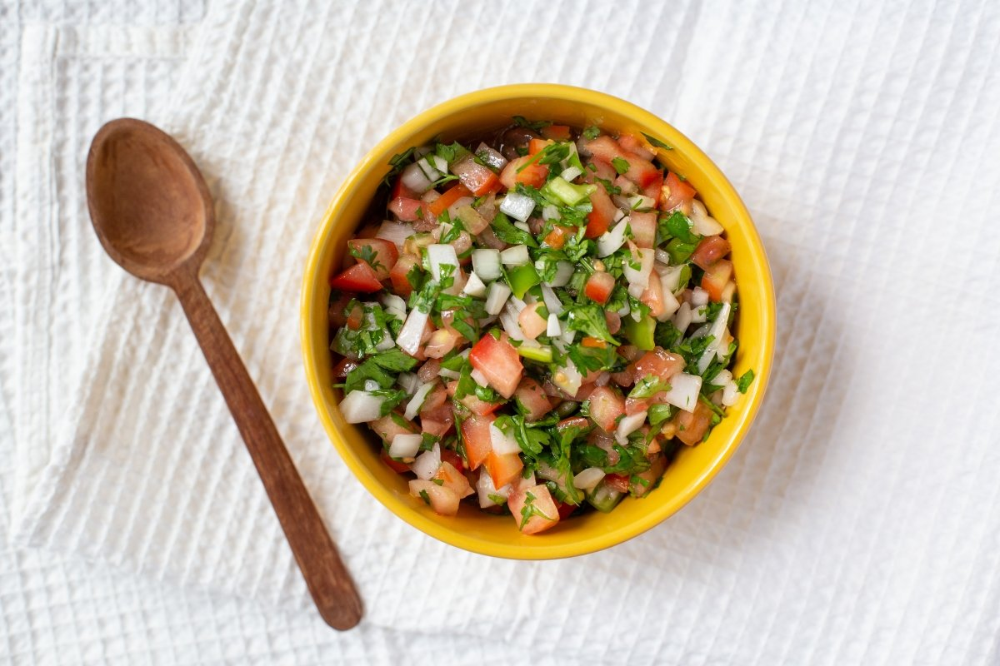

Chilean Pebre" Sauce

This Chilean pebre sauce recipe is a Chilean salsa. It is most commonly used on bread.
It is also used on meats or anything else you desire. My favorite way to use it is on barbecued tri-tip.
You can vary the ingredients to suit your taste.
Ingredients:
- 6 scallions, chopped
- 2 Roma tomatoes, quartered
- 1 bunch fresh cilantro (leaves and stems), chopped
- 3 tablespoons red wine vinegar
- 2 tablespoons chili garlic sauce
- 5 cloves garlic
- ½ tablespoon olive oil
- ½ teaspoon garlic salt
Steps:
- Combine scallions, tomatoes, cilantro, red wine vinegar, chili garlic sauce, garlic, olive oil,
and garlic salt in the bowl of a food processor or blender; pulse until reaches desired consistency.
Refrigerate to let flavors blend, about 2 hours.
Back to homepage